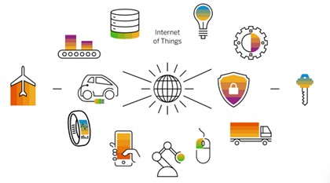
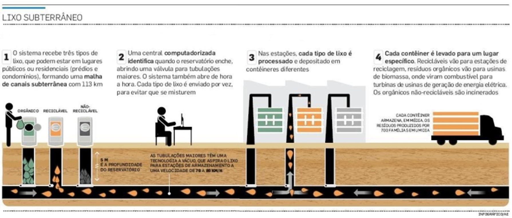

O QUE É?
A internet das coisas (IoT) refere-se a uma rede de dispositivos físicos, veículos,
eletrodomésticos e outros objetos físicos que são incorporados com sensores,
software e conectividade de rede, permitindo coletar e compartilhar dados.
Em linhas gerais, a Internet das Coisas inclui
qualquer objeto ou “coisa” que possa ser conectado sem fio a uma rede de
Internet. Hoje, a IoT significa mais especificamente coisas conectadas e equipadas com
outras
tecnologias para transmitir e receber dados com a finalidade de informar os usuários ou
automatizar uma ação.
Tradicionalmente, a conectividade é obtida por Wi-Fi, mas hoje o 5G e outros tipos de
plataforma de rede
prometem tratar de imensos conjuntos de dados com
velocidade e confiabilidade, praticamente em todos os lugares.
Tem importância porque representa a interconexão de dispositivos e objetos cotidianos à
internet.
Isso reside na capacidade de monitorar e gerenciar
esses objetos à distância.

Figura 1: O que é IoT
EXEMPLOS
Smart Homes – Em casas inteligentes os eletrônicos, sistemas elétricos,
segurança se comunicam com um smartphone que permite um usuário gerenciar os ambiente dentro ou
longe da
própria casa.
Carros Inteligentes – Os veículos autônomos ou não podem se comunicar com
o dispositivo móvel, trocar dados, interagir e aprender.
Smart Cities – O conceito de casas inteligentes onde a tecnologia visa o
bem-estar da população, o que não inviabiliza a adoção de estratégias que
tiveram sucesso emo outros lugares. Exemplo de Barcelona, onde o sistema de coleta
de lixo foi totalmente automatizado e funciona à vácuo, pois as lixeiras estão interligadas por
uma
rede subterrânea.

Figura 2: Exemplos de IoT
PROTOCOLOS
A natureza adaptável e confiável inerente do Internet Protocol (IP) o torna um meio aceitável
para transmissão
entre módulos IoT. A arquitetura do sistema (através da qual os dados devem trafegar) determina
o
tipo de protocolo IoT.
Protocolo avançado de enfileiramento de mensagens (AMQP) - é um protocolo de camada de aplicação
padrão aberto
para middleware orientado a mensagens. Ele facilita a comunicação entre processos em redes IP,
permitindo
que diferentes sistemas troquem mensagens de forma confiável e segura.
CoAP (Protocolo de aplicativo restrito) - protocolo de comunicação projetado para dispositivos
com
recursos limitados, como sensores e atuadores em redes de Internet das Coisas (IoT). Ele foi
desenvolvido
pelo IETF (Internet Engineering Task Force) como uma alternativa leve ao HTTP, permitindo a
comunicação
eficiente entre dispositivos em redes restritas.
DDS (Serviço de distribuição de dados) - padrão de middleware desenvolvido pelo Object Management
Group
(OMG) para facilitar a troca de dados em tempo real entre sistemas distribuídos. Ele utiliza um
modelo
de comunicação publish-subscribe, onde os produtores de dados (publishers) enviam informações
sobre tópicos
específicos, e os consumidores de dados (subscribers) recebem essas informações conforme seu
interesse.
MQTT (Transporte de Telemetria de Fila de Mensagens) - protocolo de comunicação leve e eficiente,
projetado para a troca de mensagens entre dispositivos em redes com largura de banda limitada e
alta latência.
Ele é amplamente utilizado em aplicações de Internet das Coisas (IoT) devido à sua simplicidade
e baixo consumo
de recursos.
DESAFIOS
Em relação à segurança de dados é inevitável que o nível de fragilidade aumente de acordo
com o aumento de dispositivos conectados a uma rede. Ainda mais se este aparelho não
for totalmente compatível. Isso tem sido visto como uma brecha para a realização de ataques.
As invasões, na maioria das vezes, acontecem por conta de oportunidades.
Um hacker busca sempre os caminhos mais fáceis para chegar até a vítima e roubar dados.
Com a Internet das Coisas isso pode ser possível simplesmente por meio de um gadget não
protegido adequadamente.
O fato é que nem sempre um sistema utilizado em um gadget pode estar compatível
com o sistema principal, e essa compatibilidade pode gerar uma brecha de
ataque para invasores.
Além disso, é preciso ampliar e aprimorar o processo de conectividade da rede para suportar
diferentes dispositivos com sistemas operacionais distintos. Nesse sentido,
alguns dos protocolos mais comuns e corretos para aplicação são:
- Wi-Fi;
- Zigbee;
- Bluetooth.
Confidencialidade da informação - Se considerarmos apenas a residência de uma pessoa,
podemos imaginar que por meio do controle de um eletrodoméstico, como o micro-ondas,
é possível buscar informações de fechadura, propiciando até a abertura do imóvel por
meio de uma invasão de sistemas.
Por outro lado, há a segurança de uma organização como dados confidenciais,
estratégicos e de operação. Tudo isso pode estar mais suscetível a ataques
por meio de gadgets desenvolvidos para a Internet das Coisas.